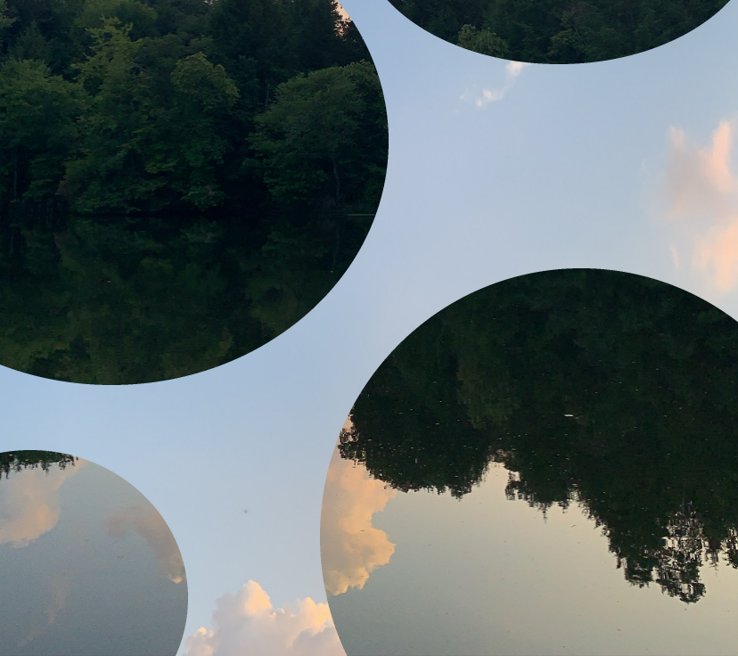

Sheena Ringo - ＪＬ００５便で ～Flight JL005～ (B747-246 Mix by Yoshinori Sunahara)
PASOCOM MUSIC CLUB - R_U_S_H_H_O_U_R_
RYUtist - 水硝子
PAS TASTA - sunameri smoke (unlucksi remix)
SEEDA - hana to ame
skycave - 星宮とと+TEMPLIME
PASOCOM MUSIC CLUB - waterfall
DÉ DÉ MOUSE - Wonderful Escape
DJ Newtown - 2005 (Cola Splash Cover Remix Vocal By 加奈子)
Soushi Sakiyama - 覚えていたのに
MIKE - No Curse Lifted (rivers of love)
PAS TASTA - river relief